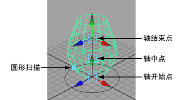

- 绘制表示要创建的曲面的横截面（或“剖面”）的曲线。
- 选择曲线，然后选择曲面 > 旋转(Surfaces > Revolve) >
 。
。 - 设定旋转选项：
- 选择围绕其扫描曲面的初始轴。
- 如果仅要旋转曲线的一个子部分，请将“曲线范围”(Curve Range)设定为“部分”(Partial)。
- 在工具箱中，单击“显示操纵器工具”(Show Manipulator tool)以操纵曲面。 
如果启用“部分”(Partial)选项以旋转曲线的子部分，则可以通过在通道盒中选择分曲线节点并编辑 minValue 和 maxValue 属性，控制 Maya 旋转哪部分曲线。如果选择了“显示操纵器工具”(Show Manipulator tool)，控制柄将显示在曲线上以允许您拖动值。